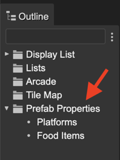
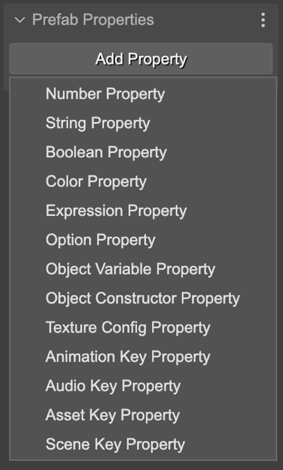
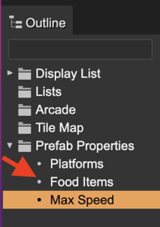
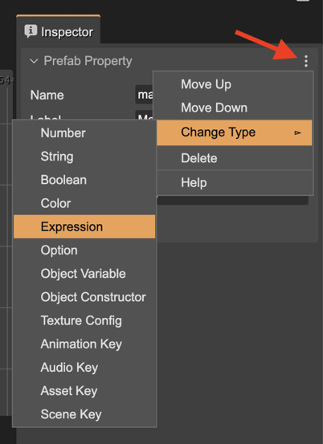

Creating a prefab user property
The Prefab Properties section of the Inspector view shows a button to create a new user property. This section is shown when you select the scene (click on a blank space of the scene), or when you select the Prefab Properties element in the Outline view:
Click on the Add Property button to create a new property. The button shows a menu with the different type of properties:
The properties are shown as children of the Prefab Properties element. Click a property for editing it in the Inspector view:
All type of properties requires some common parameters that you should provide:
The Name of the property. It is used by the compiler to generate a property declaration code. It should be a valid JavaScript identifier.
The Label. It is a UI friendly version of the Name. For example, the label for the maxSpeed name could be Maximum Speed. In code, is generated a maxSpeed field, but the UI shows Maximum Speed.
The Tooltip. Used in the UI as documentation of the property.
The Default value.
The Custom Definition flag. If enabled, the scene compiler skips the generation of the code with the property declaration. It allows you writing a custom implementation of the property. For example, using a custom getter and setter. Learn more about using properties with custom definition.
The menu of the property section shows the following actions:
Move the property down/up.
Change the type of the property.
Delete the property.
You can undo/redo all these changes.
